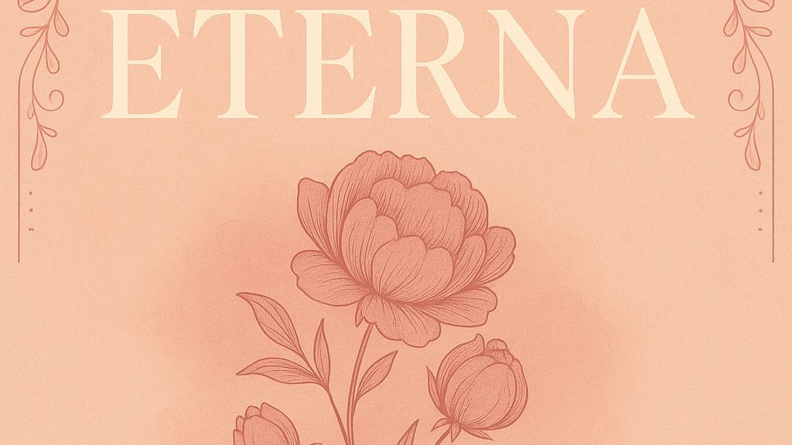

Eterna: Vanessa Marie King’s Debut Album Feels Like Late-Night Truth Set to Melody

The following feature is now included in our online magazine which is also available in print.
Issue #4
Online Magazine | Print MagazineFor more details contact us at: volechomag@gmail.com
There is something about debut albums that always registers on a different level. They possess that combination of hope, fear, and hunger that can't be faked. Eterna, the debut album by Vanessa Marie King, not only does that description justice—it embodies it. From Mission, Washington, and on the family-owned label KINGBYDESIGN, Vanessa's debut full-length album sounds like it was recorded in the wee hours, after midnight, when every note matters and time isn't wasted. It's gentle, consistent, and packed with little details that linger long after the last track.
The album dropped on September 30, 2025, but already feels like an instant classic. There is no flash for sale here, no false exercise in seducing the trends. Rather, Eterna teases in the space between memory and confession, a rebuke of songs derived from a kind of emotional truth that just isn't good enough on the contemporary production line. The title track sets the tone—soft but uncompromising, ethereal but real. It is the sound of a person who has discovered the price of vulnerability and yet continues to sing.
Vanessa does not sing these songs but lives in them. In "Jugaste con fuego," she is the fire and its smolder, the rage and the breath. Production is taut but not aseptic, her voice provided room to unfurl and the rhythms to anchor. There is a heartbeat underlying—Latin beats wedded to pop structures, rolled guitars sweeping over vacant beats. "Niña perdida," perhaps the album's emotional center, shifts gears; it's slower, quieter, as if conversing with an older version of oneself. It's the type of song that the listener is left with in order to find their own connection, to recall their own tragedy.
Most interesting about Eterna is how Vanessa remains on that edge of control and intimacy. You sense her self-control in the words, the restraint in the delivery. She's not demonstrating that she can sing, she's demonstrating that she can feel. What she is able to extract is something alive, and completely possessed. There are traces of young Natalia Lafourcade in the sweetness, some of Carla Morrison's sadness, and even the grunge of Rosalía pre-fame when her music was edgier. But Vanessa never receives the sense that she is in someone else's debt. She constructs her own landscape from common earth.
There is something filmic about the pacing of the album too. Hearing Eterna in its entirety is akin to viewing a movie that does not require a turn in the plot to sustain your interest. It's the mood it evokes, the manner in which a subtle melodic adjustment is able to propel an entire scene from hopelessness to healing without ever altering a lyric. You might envision these tunes accompanying some A24-type coming-of-age feature about adolescence along the border, or a laid-back indie feature in which little happens but all that does is significant. Consider how Normal People employed music to sustain mood, or how Call Me By Your Name built silences into narrative. Eterna has that kind of emotional pacing, too: low-key but charged.
Production-wise, KINGBYDESIGN tightens the album up and brings it close. There's earthiness that implies home-made material perhaps late nights in a tiny studio, where the sound man has an idea when to hold back and buff and let the idiosyncrasies breathe. You can bet Vanessa has played a part in cutting each nuance. The drums are natural, the guitars are human, and the synths hover like footnotes and not headlines. It's an album that is aware that sometimes the softest noise is the heaviest.
The greatest thing about Vanessa Marie King is she's not trying to invent the wheel. She's attempting to be real. Eterna isn't seeking to make big declarations about the world—it's mapping the emotional fingerprints of an individual attempting to make sense out of love and loss. That level of intensity does not exist. In a world where artists so often sacrifice sincerity for spectacle, Vanessa does the opposite, wagering on low-key conviction.
If you're the sort of listener who craves recordings that seem to have a handmade texture, this one's for you. Julieta Venegas or even Billie Eilish's more introspective songs have listeners who'll hear something familiar here—a balance of intimacy and production sheen that never tips over into excess. You might also situate Eterna in the company of records like Arca's La Maravilla for emotional bravery, or Valeria Castro's Cuídate for whispered-over heartbreak.
There's a thread that runs through all of these records: music as mirror, not mask. Lisa succeeds easily in that tradition. Her lyrics are real-worn, her melodies heavy with the weight of age. When she sings about being strong, it's not of the inspirational kind—it's living, the quiet determination of rising up time when time will not. That's the vitality that keeps Eterna going, the feeling that every song is an act of small being alive.
Aside from the music, what is thrilling is what Eterna means to her future. It is neither so much a debut nor a status that emotional depth can dominate in an overcrowded world. There is no gimmickry, no ironic distance, no viral hook for a brief fifteen seconds of fame. Rather, Vanessa provides us the old-fashioned one that is still best of all: honesty.
If you've got Eterna on in the background, it'll be nice. But if you listen to it with headphones, late at night, you'll find that it's doing something quietly other. It's reminding you of the little private truths that are just below the surface of the day—the kind that don't go away even when the music goes away.
In the end, Vanessa Marie King doesn't so much make an album, she makes a place to think. Eterna is not in grand gestures or glimmery production tricks. It's in the boil of emotion, the quiet-still repairing that happens when something breaks. It's the kind of album that probably will be more meaningful the second time you hear it, then again in a year.
So listen to it on a road trip or at the stroke of midnight one Sunday morning when you're analyzing everything too much. Listen to it alongside a viewing of Her or Aftersun—movies that realize that quiet can say it all. And when you reach the end of the last song, don't skip ahead. Be still with it. Let it buzz on the horizon. Because Eterna is not asking you to go anywhere. It only wants to remind you how to get home.
Follow Our Playlist For More Music!
This dispatch was last updated on October 12, 2025